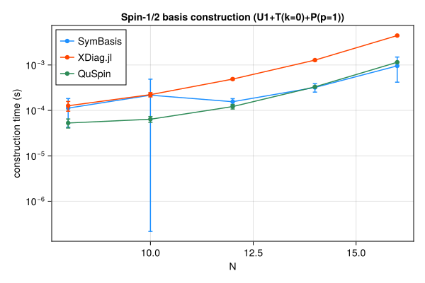
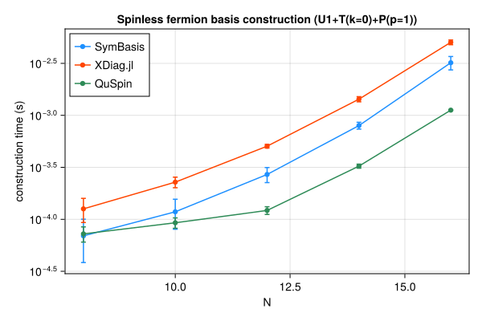
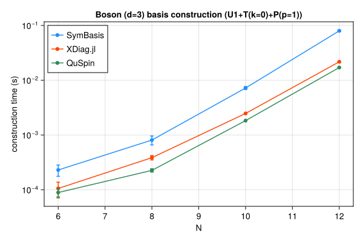

Benchmarks
Symmetry-resolved basis construction and representative-state lookup speed, compared against XDiag.jl and QuSpin. SymBasis is benchmarked against its own dev checkout; XDiag.jl and QuSpin are whatever their latest released versions were at the time this page was generated. Regenerated automatically on every SymBasis release.
Threads are left at each library's own defaults (JULIA_NUM_THREADS=auto, OMP_NUM_THREADS unset) rather than pinned to 1 – these numbers reflect out-of-the-box performance, not a strictly single-threaded comparison.
Sweep: BENCH_SWEEP=quick
Spin-1/2 — basis construction
plot_construction("spin", "Spin-1/2")
| N | config | dim | SymBasis | XDiag | QuSpin | XDiag/SymBasis | QuSpin/SymBasis |
|---|---|---|---|---|---|---|---|
| 8 | U1 | 70 | 3.173e-05 ± 3.3e-05 s | 4.152e-06 ± 6.8e-06 s | 3.941e-05 ± 1.7e-05 s | 0.13x | 1.24x |
| 8 | U1+T(k=0) | 10 | 0.0001782 ± 0.00019 s | 5.22e-05 ± 3e-05 s | 5.045e-05 ± 1.2e-05 s | 0.29x | 0.28x |
| 8 | U1+T(k=0)+P(p=1) | 8 | 0.0001123 ± 7e-05 s | 0.0001265 ± 3.1e-05 s | 5.276e-05 ± 1.2e-05 s | 1.13x | 0.47x |
| 10 | U1 | 252 | 3.948e-05 ± 3.6e-05 s | 4.265e-06 ± 6.5e-06 s | 3.464e-05 ± 7.1e-06 s | 0.11x | 0.88x |
| 10 | U1+T(k=0) | 26 | 6.188e-05 ± 3.1e-05 s | 9.97e-05 ± 2.5e-05 s | 5.248e-05 ± 9.3e-06 s | 1.61x | 0.85x |
| 10 | U1+T(k=0)+P(p=1) | 16 | 0.000216 ± 0.00027 s | 0.0002221 ± 2.4e-05 s | 6.385e-05 ± 9.3e-06 s | 1.03x | 0.30x |
| 12 | U1 | 924 | 0.0004061 ± 0.00027 s | 4.548e-06 ± 6.5e-06 s | 4.746e-05 ± 1.2e-05 s | 0.01x | 0.12x |
| 12 | U1+T(k=0) | 80 | 8.604e-05 ± 3.2e-05 s | 0.0002646 ± 3.1e-05 s | 9.072e-05 ± 1.2e-05 s | 3.08x | 1.05x |
| 12 | U1+T(k=0)+P(p=1) | 50 | 0.0001552 ± 2.6e-05 s | 0.0004887 ± 2.2e-05 s | 0.0001213 ± 1.4e-05 s | 3.15x | 0.78x |
| 14 | U1 | 3432 | 0.0002003 ± 0.00017 s | 5.092e-06 ± 6.2e-06 s | 6.802e-05 ± 8.6e-06 s | 0.03x | 0.34x |
| 14 | U1+T(k=0) | 246 | 0.0001784 ± 3.2e-05 s | 0.0009059 ± 4.2e-05 s | 0.0002242 ± 1.3e-05 s | 5.08x | 1.26x |
| 14 | U1+T(k=0)+P(p=1) | 133 | 0.0003197 ± 6.7e-05 s | 0.00128 ± 5.6e-05 s | 0.0003295 ± 1.3e-05 s | 4.00x | 1.03x |
| 16 | U1 | 12870 | 0.0005674 ± 0.00032 s | 6.782e-06 ± 7.7e-06 s | 0.0001479 ± 9.1e-06 s | 0.01x | 0.26x |
| 16 | U1+T(k=0) | 810 | 0.0005136 ± 5.9e-05 s | 0.003611 ± 2.7e-05 s | 0.0007325 ± 1.6e-05 s | 7.03x | 1.43x |
| 16 | U1+T(k=0)+P(p=1) | 440 | 0.0009558 ± 0.00054 s | 0.00444 ± 6.3e-05 s | 0.001148 ± 2.5e-05 s | 4.65x | 1.20x |
Spin-1/2 — representative lookup (seconds/call, amortized over batch)
| N | config | nsamples | SymBasis | XDiag | QuSpin |
|---|---|---|---|---|---|
| 16 | U1+T(k=0)+P(p=1) | 10000 | 3.103e-07 ± 2.8e-08 s | N/A (no decoupled API) | 1.795e-07 ± 3.2e-09 s |
Spinless fermion — basis construction
plot_construction("fermion", "Spinless fermion")
| N | config | dim | SymBasis | XDiag | QuSpin | XDiag/SymBasis | QuSpin/SymBasis |
|---|---|---|---|---|---|---|---|
| 8 | U1 | 70 | 2.727e-05 ± 3.8e-05 s | 4.102e-06 ± 6.2e-06 s | 5.022e-05 ± 1.4e-05 s | 0.15x | 1.84x |
| 8 | U1+T(k=0) | 9 | 4.993e-05 ± 2.3e-05 s | 5.208e-05 ± 2.7e-05 s | 6.349e-05 ± 1.3e-05 s | 1.04x | 1.27x |
| 8 | U1+T(k=0)+P(p=1) | 6 | 6.931e-05 ± 3.1e-05 s | 0.0001261 ± 3.3e-05 s | 7.244e-05 ± 1.2e-05 s | 1.82x | 1.05x |
| 10 | U1 | 252 | 4.106e-05 ± 3.4e-05 s | 4.573e-06 ± 6.5e-06 s | 5.296e-05 ± 1e-05 s | 0.11x | 1.29x |
| 10 | U1+T(k=0) | 26 | 0.000192 ± 2.8e-05 s | 0.000109 ± 3.2e-05 s | 7.799e-05 ± 1.3e-05 s | 0.57x | 0.41x |
| 10 | U1+T(k=0)+P(p=1) | 16 | 0.0001181 ± 3.8e-05 s | 0.0002278 ± 2.7e-05 s | 9.259e-05 ± 1.1e-05 s | 1.93x | 0.78x |
| 12 | U1 | 924 | 5.739e-05 ± 4e-05 s | 4.853e-06 ± 6.6e-06 s | 6.239e-05 ± 1.2e-05 s | 0.08x | 1.09x |
| 12 | U1+T(k=0) | 76 | 0.0001379 ± 4.3e-05 s | 0.0002948 ± 2.2e-05 s | 0.0001193 ± 3.1e-05 s | 2.14x | 0.87x |
| 12 | U1+T(k=0)+P(p=1) | 33 | 0.00027 ± 4.5e-05 s | 0.0005051 ± 2.1e-05 s | 0.0001217 ± 1e-05 s | 1.87x | 0.45x |
| 14 | U1 | 3432 | 0.0002793 ± 2.7e-05 s | 5.454e-06 ± 7.2e-06 s | 6.463e-05 ± 8.2e-06 s | 0.02x | 0.23x |
| 14 | U1+T(k=0) | 246 | 0.0003876 ± 3.3e-05 s | 0.001024 ± 3.1e-05 s | 0.0002237 ± 1e-05 s | 2.64x | 0.58x |
| 14 | U1+T(k=0)+P(p=1) | 113 | 0.0007973 ± 6e-05 s | 0.001431 ± 8.2e-05 s | 0.0003248 ± 1.5e-05 s | 1.79x | 0.41x |
| 16 | U1 | 12870 | 0.0004991 ± 0.00045 s | 7.169e-06 ± 9e-06 s | 0.0001502 ± 1e-05 s | 0.01x | 0.30x |
| 16 | U1+T(k=0) | 809 | 0.001517 ± 0.00035 s | 0.00407 ± 3.8e-05 s | 0.0007362 ± 8.6e-06 s | 2.68x | 0.49x |
| 16 | U1+T(k=0)+P(p=1) | 422 | 0.003208 ± 0.00047 s | 0.005042 ± 0.00026 s | 0.001122 ± 9.7e-06 s | 1.57x | 0.35x |
Spinless fermion — representative lookup (seconds/call, amortized over batch)
| N | config | nsamples | SymBasis | XDiag | QuSpin |
|---|---|---|---|---|---|
| 16 | U1+T(k=0)+P(p=1) | 10000 | 1.815e-06 ± 1.9e-09 s | N/A (no decoupled API) | 1.868e-06 ± 3e-09 s |
Boson (d=3) — basis construction
plot_construction("boson", "Boson (d=3)")
| N | config | dim | SymBasis | XDiag | QuSpin | XDiag/SymBasis | QuSpin/SymBasis |
|---|---|---|---|---|---|---|---|
| 6 | U1 | 141 | 7.806e-05 ± 7.8e-05 s | 4.444e-06 ± 6.2e-06 s | 6.074e-05 ± 1.3e-05 s | 0.06x | 0.78x |
| 6 | U1+T(k=0) | 26 | 0.000133 ± 6.9e-05 s | 5.597e-05 ± 2.6e-05 s | 7.975e-05 ± 1.2e-05 s | 0.42x | 0.60x |
| 6 | U1+T(k=0)+P(p=1) | 18 | 0.0002299 ± 5.4e-05 s | 0.0001059 ± 3.2e-05 s | 8.912e-05 ± 1.8e-05 s | 0.46x | 0.39x |
| 8 | U1 | 1107 | 0.0003047 ± 0.00022 s | 7.102e-06 ± 7.4e-06 s | 9.74e-05 ± 1e-05 s | 0.02x | 0.32x |
| 8 | U1+T(k=0) | 142 | 0.000506 ± 6.8e-05 s | 0.000252 ± 3.7e-05 s | 0.0002314 ± 1.5e-05 s | 0.50x | 0.46x |
| 8 | U1+T(k=0)+P(p=1) | 84 | 0.0008095 ± 0.00015 s | 0.0003862 ± 3.6e-05 s | 0.0002262 ± 1.6e-05 s | 0.48x | 0.28x |
| 10 | U1 | 8953 | 0.001359 ± 0.00013 s | 1.528e-05 ± 2.1e-05 s | 0.0002916 ± 1.1e-05 s | 0.01x | 0.21x |
| 10 | U1+T(k=0) | 902 | 0.004391 ± 0.00027 s | 0.00195 ± 4.3e-05 s | 0.001504 ± 9.5e-06 s | 0.44x | 0.34x |
| 10 | U1+T(k=0)+P(p=1) | 486 | 0.00722 ± 0.00043 s | 0.002477 ± 3.2e-05 s | 0.001833 ± 2.5e-05 s | 0.34x | 0.25x |
| 12 | U1 | 73789 | 0.01077 ± 0.00053 s | 2.804e-05 ± 9.2e-06 s | 0.002088 ± 3.3e-05 s | 0.00x | 0.19x |
| 12 | U1+T(k=0) | 6166 | 0.04925 ± 0.0021 s | 0.01823 ± 0.00013 s | 0.01413 ± 3.3e-05 s | 0.37x | 0.29x |
| 12 | U1+T(k=0)+P(p=1) | 3179 | 0.07985 ± 0.0023 s | 0.02173 ± 0.00014 s | 0.01707 ± 7.8e-05 s | 0.27x | 0.21x |
Boson (d=3) — representative lookup (seconds/call, amortized over batch)
| N | config | nsamples | SymBasis | XDiag | QuSpin |
|---|---|---|---|---|---|
| 12 | U1+T(k=0)+P(p=1) | 10000 | 6.818e-06 ± 4.8e-08 s | N/A (no decoupled API) | 3.167e-07 ± 8.7e-10 s |